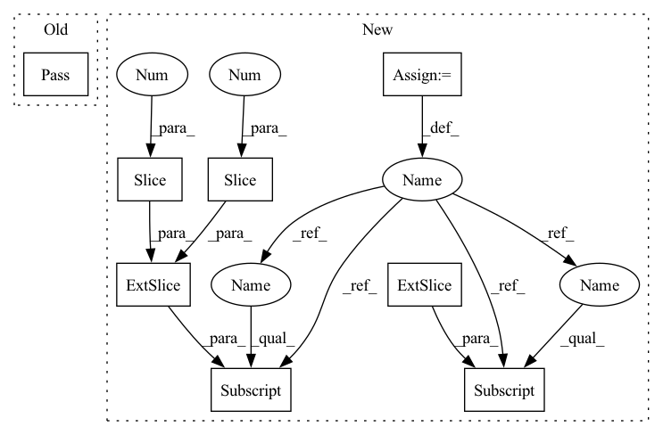

Pattern ID :18509
Before Change
if img is None:
if len(frames) > 0: img = frames[-1]
else: img = np.zeros((112, 112, 3), dtype=np.uint8)
if crop_augment: pass // TODO: implement random crop
if mirror_augment: img = cv2.flip(img, 1)
// TODO: add temporal augmentation (repeat, deletion)
frames.append(img)After Change
if len(frames) > 0: img = frames[-1]
else: img = np.zeros((112, 112, 3), dtype=np.uint8)
if crop_augment:
img = cv2.resize(img, (128, 128))
if is_training:
crop_x = random.randint(0, 16)
crop_y = random.randint(0, 16)
img = img[crop_y: crop_y + 112, crop_x: crop_x + 112]
else:
img = img[8: 120, 8: 120]
if mirror_augment and is_training: img = cv2.flip(img, 1)
// TODO: add temporal augmentation (repeat, deletion)
frames.append(img)
seq = np.stack(frames).transpose(3, 0, 1, 2).astype(np.float32) // THWC->CTHWIn pattern: SUPERPATTERN
Frequency: 4
Non-data size: 8
Instances Fragment ID: 60476440
Project Name: sailordiary/m3f.pytorch
Commit Name: 639f60090b44d3fdb3b40ae0df467ffed523da9e
Time: 2020-02-01
Author: me@sailorzhang.com
File Name: models/dataset.py
M Class Name: AnonimousClass
N Class Name: AnonimousClass
M Method Name: load_video(7)
N Method Name: load_video(6)
M Parent Class:
N Parent Class:
M File Name: models/dataset.py
N File Name: models/dataset.py
M Start Line: 50
M End Line: 75
N Start Line: 47
N End Line: 70
Before Change
This method must be overridden in child classes.
pass
@abstractmethod
def splat(
self, x_proj, y_proj, dist, xyz, img_extrinsic, crop_top=0,After Change
def project(self, vertices, frameId, inverse=True):
// current camera pose
curr_pose = self.cam2world[frameId]
T = curr_pose[:3, 3]
R = curr_pose[:3, :3]
// convert points from world coordinate to local coordinate
points_local = self.world2cam(vertices, R, T, inverse)
Fragment ID: 60476427
Project Name: drprojects/deepviewagg
Commit Name: 57899df2507b6838676f63101013607f3f23c17d
Time: 2022-04-04
Author: wl5719@engie.com
File Name: torch_points3d/core/multimodal/camera.py
M Class Name: Camera
N Class Name: Camera
M Method Name: project(4)
N Method Name: project(4)
M Parent Class:
N Parent Class: ABC
M File Name: torch_points3d/core/multimodal/camera.py
N File Name: torch_points3d/core/multimodal/camera.py
M Start Line: 280
M End Line: 280
N Start Line: 56
N End Line: 66
Before Change
// according to calculated weights (of proposal net) and indices of inverse sampling, calculate the bounds required for loss computation
// input weights (from proposal net) shape: (ray_num, num of proposal interval), inds shape (ray_num, fine_sample num + 1? TODO, 2)
def getBounds(weights:torch.Tensor, inds:torch.Tensor):
pass
class NeRF(nn.Module):
@staticmethod
def init_weight(m):After Change
// 输入的inds应该是sample_pdf中的 below，每个点将有两个值。考虑到sample_pdf得到的点数量为(cone_num + 1)
def getBounds(weights:torch.Tensor, inds:torch.Tensor, sort_inds:torch.Tensor):
ray_num, target_device = weights.shape[0], weights.device
inds = torch.gather(inds, -1, sort_inds)
starts, ends = inds[:, :-1] , inds[:, 1:] + 1
sat:torch.Tensor = torch.cat((torch.zeros(ray_num, 1, device = target_device), torch.cumsum(weights, dim = -1)), dim = -1) // 输入的 weights是什么？proposal net 的weights
return torch.gather(sat, -1, ends) - torch.gather(sat, -1, starts)
Fragment ID: 60476456
Project Name: enigmatisms/nerf
Commit Name: c9ee74d3e40962cee741ca883d6a6a7b46ee6557
Time: 2022-04-24
Author: 984041003@qq.com
File Name: py/addtional.py
M Class Name: AnonimousClass
N Class Name: AnonimousClass
M Method Name: getBounds(3)
N Method Name: getBounds(2)
M Parent Class:
N Parent Class:
M File Name: py/addtional.py
N File Name: py/addtional.py
M Start Line: 17
M End Line: 17
N Start Line: 17
N End Line: 22
Before Change
if img is None:
if len(frames) > 0: img = frames[-1]
else: img = np.zeros((112, 112, 3), dtype=np.uint8)
if crop_augment: pass // TODO: implement random crop
if mirror_augment: img = cv2.flip(img, 1)
// TODO: add temporal augmentation (repeat, deletion)
frames.append(img)After Change
if len(frames) > 0: img = frames[-1]
else: img = np.zeros((112, 112, 3), dtype=np.uint8)
if crop_augment:
img = cv2.resize(img, (128, 128))
if is_training:
crop_x = random.randint(0, 16)
crop_y = random.randint(0, 16)
img = img[crop_y: crop_y + 112, crop_x: crop_x + 112]
else:
img = img[8: 120, 8: 120]
if mirror_augment and is_training: img = cv2.flip(img, 1)
// TODO: add temporal augmentation (repeat, deletion)
frames.append(img)
seq = np.stack(frames).transpose(3, 0, 1, 2).astype(np.float32) // THWC->CTHW Fragment ID: 60476377
Project Name: sailordiary/m3f.pytorch
Commit Name: 639f60090b44d3fdb3b40ae0df467ffed523da9e
Time: 2020-02-01
Author: me@sailorzhang.com
File Name: models/dataset.py
M Class Name: AnonimousClass
N Class Name: AnonimousClass
M Method Name: load_video(7)
N Method Name: load_video(6)
M Parent Class:
N Parent Class:
M File Name: models/dataset.py
N File Name: models/dataset.py
M Start Line: 50
M End Line: 75
N Start Line: 47
N End Line: 70
Before Change
// TODO
def test_conv_kb(self):
Tests that ConvKB can be executed.
pass
After Change
// Dummy forward passes
// TODO: Use triple factory
batch_size = 16
triples = torch.zeros(batch_size, 3, dtype=torch.long)
// TODO: Refactor common tests for all models, e.g. shape checking
// Test forward_owa
scores = model.forward_owa(triples)
// Check shape
assert scores.shape == (batch_size, 1)
// Test forward_cwa
scores = model.forward_cwa(triples[:, :2] )
// Check shape
assert scores.shape == (batch_size, model.num_entities)
// Test forward_inverse_cwa
scores = model.forward_inverse_cwa(triples[:, 1:] )
// Check shape
assert scores.shape == (batch_size, model.num_entities)
Fragment ID: 60476430
Project Name: pykeen/pykeen
Commit Name: 69db6cbe5781b7cd552cd7102216e5e10a423089
Time: 2019-07-29
Author: berrendorf@dbs.ifi.lmu.de
File Name: tests/test_models.py
M Class Name: TestModels
N Class Name: TestModels
M Method Name: test_conv_kb(1)
N Method Name: test_conv_kb(1)
M Parent Class: unittest.TestCase
N Parent Class: unittest.TestCase
M File Name: tests/test_models.py
N File Name: tests/test_models.py
M Start Line: 76
M End Line: 76
N Start Line: 78
N End Line: 100